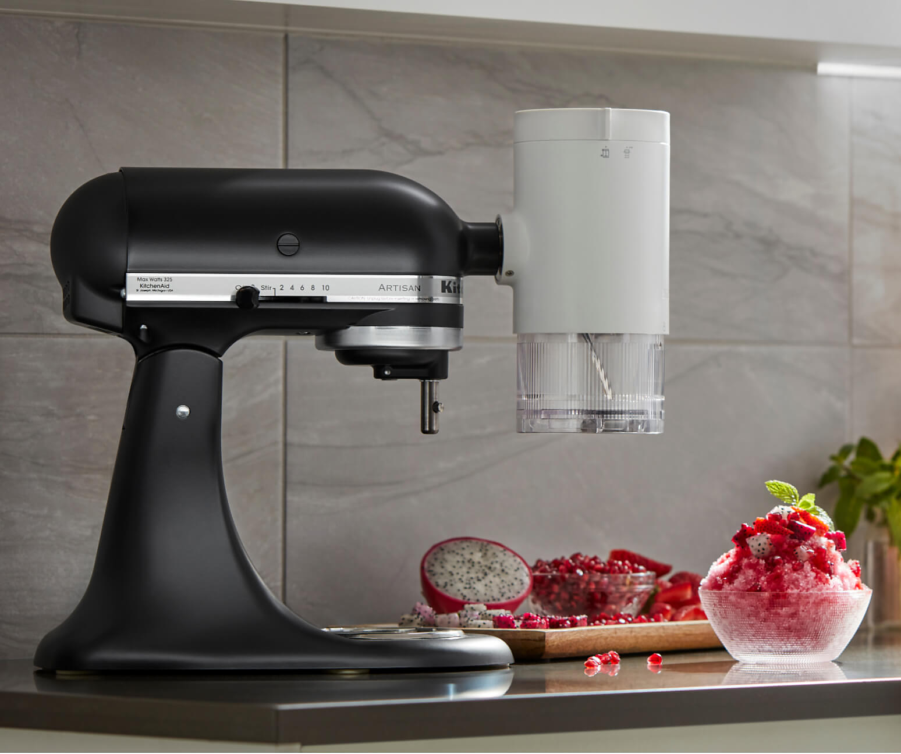
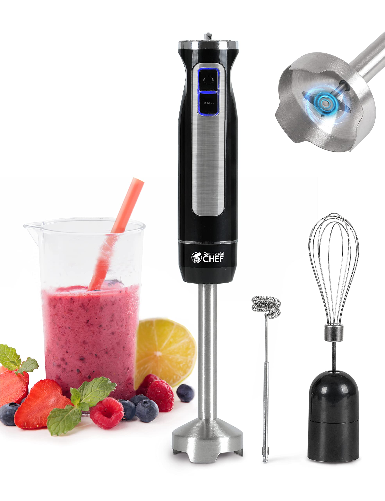
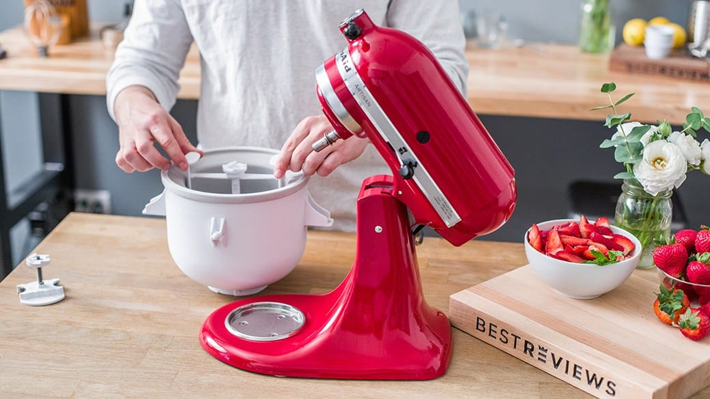

Specials
Product of the Week
Whether for amateur cooks or seasoned bakers, a stand mixer comes in handy for plenty of jobs, from kneading homemade bread to whipping cream or a frosting to ice a cake. With the Shave Ice Attachment, create light, fluffy and snow-like shaved ice to elevate a variety of desserts and drinks..
Our latest and greatest kitchen mixer. Get it now at a special price!
Weekly Sales
Our top-of-the-line mixer for all your baking needs perfect for quick and easy mixing tasks. Our Hand blender with full copper motor, which is much more powerful than most of the traditional hand blender.
Amazing discounts on a variety of kitchen mixers. Don't miss out!
Customer Guarantee
We guarantee the best quality and service. If you're not satisfied, we'll make it right. Your satisfaction is our priority!
Why Buy From Us?
- Top-quality products
- Competitive prices
- Excellent customer service
- Fast and reliable shipping